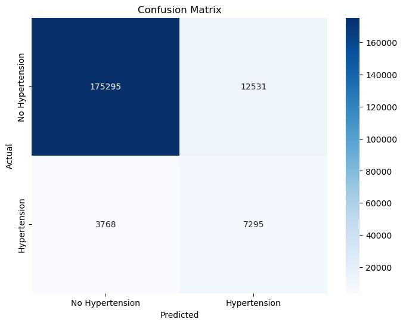
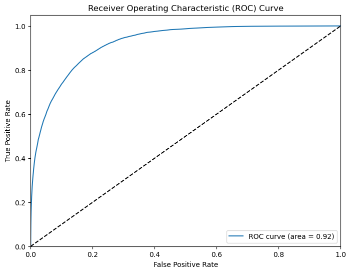

고혈압은 전 세계적으로 주요한 건강 문제이다. 혈압이 높다는 단순한 현상만으로 고혈압의 위험성을 논하지 않는다. 고혈압은 심혈관계 질환, 뇌졸중, 심부전 및 만성 신장질환 등 심각한 합병증의 주요 원인 중 하나로 알려져 있다[1]. 세계보건기구(WHO)는 고혈압을 생명과 직결되는 심혈관 및 뇌혈관 질환을 유발하지만 다른 질환과 달리 평소 별다른 증상이 없어 ‘침묵의 살인자’라는 이름을 붙였다[2]. 따라서 고혈압을 조기에 예측하고 관리하는 것은 생명 유지에 있어서 매우 중요하다. 고혈압의 발생에는 다양한 요인이 영향을 미친다. 주요 원인 인자로는 유전적 요인, 비만, 흡연, 과도한 알코올 소비 등이 있다. 또한, 당뇨병 및 고지혈증과 같은 대사성 질환도 고혈압의 위험을 증가시킨다. 이러한 인자들은 모두 건강검진 데이터에서 추론 및 확인할 수 있는 요소들이다. 건강검진 데이터에는 당뇨병과 관련이 있는 공복혈당, 허리둘레 수치와 고지혈증의 주요 지표인 총 콜레스테롤, HDL, LDL 수치가 포함되어 있다. WHO는 현재 고혈압이 있는 30~79세 성인 중 54%만이 고혈압 진단을 받았고, 42%는 고혈압 치료를 받고 있으며, 21%는 고혈압을 조절하고 있는 중이라 밝혔다[3]. 즉 고혈압은 아직까지도 자신의 고혈압 여부에 대하여 알지 못하거나, 진단/치료 받지 못하는 인구비율이 매우 높은 편으로 알려져 있는 질병이다[4]. 건강검진 데이터는 정기적인 검진을 통해 지속적으로 수집되며, 머신러닝은 대량의 데이터를 분석하여 패턴으로 찾아내는 도구로 의료 분야에서의 활용이 점차 확대되고 있다. 따라서 건강검진 데이터를 학습한 머신러닝 모델을 활용하여 혈압을 예측하면, 고혈압의 초기 발견 및 예방에 효과적으로 사용될 수 있다.
데이터는 국민건강보험공단 건강검진정보 2022년 데이터를 활용하였다. 고혈압 라벨링은 수축기 혈압이 140 이상이면서 이완기 혈압이 90 이상을 기준으로 하였다[5]. 건강검진 데이터 내 수축기 혈압과 이완기 혈압의 결측치 개수는 5,556개였다. 따라서 결측치를 제외한 994,443개의 수축기 혈압과 이완기 혈압 변수를 활용하여 각 환자마다 고혈압을 0 또는 1로 라벨링하였다. 예측 성능을 높이기 위해 건강검진 데이터 내의 변수를 활용하여 새로운 변수를 생성하였다. 몸무게와 키를 사용하여 BMI 변수를 생성하였고, 수축기 혈압과 이완기 혈압의 차이를 계산하여 혈압 차이 변수를 생성하였다. 허리둘레를 신장으로 나눈 비율을 계산하여 체지방 분포와 관련 있는 허리-키 비율 변수를 생성하였으며, 총 콜레스테롤 대비 HDL 콜레스테롤 비율 변수와 LDL 대비 HDL 콜레스테롤 비율 변수 그리고 흡연과 음주의 상호작용이 고혈압에 미치는 영향을 고려하기 위해 흡연과 음주를 곱한 값을 변수로 저장하였다. 또한 간 효소 수치를 나타내는 AST, ALT, 감마지티피를 더하여 종합적인 간 건강 상태를 나타내는 변수를 생성하였다. 식. 1은 BMI 계산 방법을 나타낸다.
식. 1. BMI 계산 방법
\[ \text{BMI} = \frac{\text{몸무게 (kg)}}{\left( \text{키 (m)} \right)^2} \]
고혈압 예측과 관련 없는 변수인 기준년도, 가입자일련번호, 구강검진수검여부, 치아우식증유무, 치석은 삭제하였다. 또한 수축기혈압, 이완기혈압 변수를 활용하여 고혈압 여부를 라벨링하였으므로 머신러닝 모델 입력 데이터에서 삭제하였다. 결측치는 scikit-learn에서 제공하는 IterativeImputer 함수를 사용하여 대체하였다. Iterative Imputer는 각 feature의 결측치를 다른 feature를 사용하여 반복적으로 예측하고 대체하는 방법이다. 이 방법은 각 feature를 독립적으로 처리하는 대신, 여러 feature 사이의 상관관계를 활용하므로 더 정확한 결측치 대체가 가능하다. 결측치 처리 방식은 실험을 통해 결정하였으며, 결측치 행 삭제 방법, 평균값 대체 방법 그리고 Iterative Imputer 방법 중 Iterative Imputer 방법이 가장 성능이 높아 사용하게 되었다. 고혈압 데이터는 938,901개의 고혈압이 아닌 경우와 55,542개의 고혈압인 경우로 이루어져 있어 클래스 불균형이 심하다. 이러한 데이터의 클래스 불균형은 분류 성능 평가 지표에 영향을 준다. 따라서 소수 클래스의 샘플을 오버샘플링하고, 다수 클래스의 일부 샘플을 제거하여 더 나은 균형을 만드는 SMOTEENN 기법을 사용하여 클래스 불균형 문제를 해결하고자 하였다. imbalanced-learn에서 제공하는 SMOTEENN 함수를 사용하였다. SMOTEENN 기법을 적용한 고혈압 클래스는 543,710개의 고혈압이 아닌 경우와 750,429개의 고혈압인 경우로 분포가 변화하였다.
랜덤포레스트 분류기 모델을 사용하여 고혈압 예측을 하였다. scikit-learn에서 제공하는 RandomForestClassifier를 사용하였다. 랜덤 포레스트는 무작위 복원추출과 무작위 변수선택으로 구축되는 기계학습 알고리즘이다. 무작위 복원추출로 학습 데이터를 n개의 샘플로 나누어, 각 샘플에서 의사결정나무를 구축한다. 또한 결정나무의 노드는 무작위로 선택된 m개의 변수 중에서 최적의 분할기준을 찾음으로써 이진(binary) 분할된다. 결과적으로 각기 다른 구조를 가지지만 예측 성능이 뛰어난 의사결정나무 집합이 구축되며, 출력변수에 대한 입력변수의 상관성이 변수중요도로 출력된다[6].
모델의 성능은 정확도, 정밀도, 재현율 및 F1-점수를 사용하여 평가하였다. 정확도는 전체 예측 중에서 실제 클래스와 일치하는 예측의 비율을 의미한다. 높은 정확도는 모델이 대부분의 사례를 올바르게 예측했다는 것을 의미하지만, 고혈압 환자가 적다면 모델이 대부분 사례를 ‘고혈압 아님’으로 예측해도 높은 정확도를 보일 수 있다. 정밀도는 모델이 고혈압으로 예측한 샘플 중 실제로 고혈압인 비율을 나타낸다. 이는 모델이 얼마나 정확하게 고혈압을 식별하는지를 의미한다. 재현율은 실제 고혈압 환자 중에서 모델이 고혈압으로 올바르게 예측한 비율을 나타낸다. 이는 모델이 고혈압 환자를 놓치지 않고 진단하는 데 중점을 둔다. 고혈압 예측에서 가장 중요한 지표이다. 예를 들어, 고혈압 환자를 놓치면 심각한 건강 문제가 발생할 수 있으므로, 높은 재현율을 중점으로 실험하였다. F1-점수는 정밀도와 재현율의 조화 평균으로, 두 지표 간의 균형을 나타낸다. 모델이 고혈압을 정확하게 예측하고 놓치지 않도록 하는 능력을 동시에 평가한다.
본 보고서 모델의 전체 정확도는 91.8%이다. 고혈압 환자에 대한 정밀도는 0.37로, 모델이 고혈압으로 예측한 사람들 중 37%만 실제로 고혈압이다. 고혈압이 아닌 경우의 정밀도는 0.98로, 모델이 대부분의 샘플을 ‘고혈압 아님’으로 예측하고 있음을 알 수 있다. 고혈압 환자에 대한 재현율은 0.66으로, 실제 고혈압 환자 중 66%를 모델이 올바르게 예측했다. 이는 모델이 상당수의 고혈압 환자를 놓치지 않고 예측하고 나타낸다. 고혈압이 아닌 경우의 재현율은 0.93이다. 의료 현장에서 고혈압이 아닌 환자에게 고혈압이라고 분류하는 경우보다 고혈압인 환자에게 고혈압이 아니라고 분류하는 경우가 더욱 위험하다. 따라서 정밀도보다 재현율이 높은 모델이 의료 현장에서 우수한 모델이므로 본 보고서의 모델이 좋은 성능을 보여주고 있음을 시사한다. 고혈압 환자에 대한 F1 점수는 0.47이고, 고혈압이 아닌 경우의 F1 점수는 0.96으로 매우 높은 성능을 보여준다. Fig.1은 모델이 고혈압을 예측할 때, 각 변수가 얼마나 예측 모델에 기여했는지를 나타낸다.
Fig. 1. 고혈압 예측 모델의 변수 중요도
Fig. 1의 X축은 변수의 중요도를 나타내며 값이 클수록 해당 변수가 모델의 예측에 더 큰 영향을 미쳤음을 의미한다. Y축은 각 특성의 이름이며, 영향력이 가장 큰 상위 10%의 변수가 표시된다. 혈압 차이 변수가 가장 영향력이 높은 것으로 나타난다. 이는 고혈압 예측에 있어서 수축기 혈압과 이완기 혈압의 차이가 의미 있음을 보여준다. 제공된 건강검진 데이터 외의 새로운 변수들이 모델의 고혈압 예측에 높은 영향력을 행사하였음을 알 수 있다. 혈압 차이 변수, 허리-키 비율, BMI, 콜레스테롤 대비 HDL 비율이 기존 변수를 활용하여 생성한 변수이다. 이를 통해 예측 성능 향상을 위해서 새로운 변수 생성은 효과적임을 알 수 있으며, 기존 유사한 변수들의 차이 값 또는 비율을 계산하여 변수를 생성하는 것이 효율적이다. Fig. 2는 모델의 성능을 시각적으로 보여주는 Confusion Matrix이다.
Fig. 2. 모델의 confusion matrix
Fig.2의 1사분면은 정답은 고혈압이 아닌데 모델이 고혈압이라고 잘못 예측한 False Positive(FP), 2사분면은 정답과 예측이 모두 고혈압이 아닌 경우인 True Negative(TN), 3사분면은 정답은 고혈압인데 모델이 고혈압이 아니라고 잘못 예측한 False Negative(FN) 그리고 4사분면은 예측과 정답 모두 고혈압인 True Positive(TP)이다. 사분면 내의 값은 샘플 수이다. 본 보고서의 모델은 높은 TN 값으로 인해 정확도가 90.8%로 높게 측정되었다. 이는 모델이 고혈압이 아닌 경우를 매우 잘 예측하고 있음을 알 수 있다. FP 값도 비교적 높아, 고혈압이 아닌 경우를 고혈압으로 잘못 예측하는 경향을 보인다. 이는 일반적으로 안 좋은 경우이지만, 고혈압인 환자에게 고혈압이 아니라고 잘못 예측한 것보다 나은 경우이므로 의료 현장에서 본 보고서의 모델이 사용될 경우 크게 문제되지 않는 사항이다. 그러나 실제 고혈압 환자를 놓치는 경우인 FN 값도 존재하므로 모델의 개선이 필요하다. 중요한 변수를 생성하여 모델의 예측력을 높이거나 새로운 모델을 사용하여 재현율을 최적화할 수도 있다. Fig. 3은 Receiver Operating Characteristic(ROC) 곡선과 Area Under the Curve(AUC)이다.
Fig. 3. 모델의 ROC 곡선
[1] 민은실, and 허명행. "고혈압 환자의 치료지시 이행에 영향을 미치는 예측요인." 기본간호학회지 19.4 (2012): 474-482.
[2] 곽노필, 13억명 앓는 질환…세계보건기구 ‘고혈압 전쟁’ 선언, 한겨례, 2023.09.21.
[3] 최선, 전세계 고혈압 환자 13억명…혈압 목표 달성은 21%, MedicalTimes, 2023.09.27.
[4] Lee, Bum Ju. "Prediction model of hypertension using sociodemographic characteristics based on machine learning." KIPS Transactions on Software and Data Engineering 10.11 (2021): 541-546.
[5] Ji, Weidong, et al. "Development and validation of prediction models for hypertension risks: A cross-sectional study based on 4,287,407 participants." Frontiers in Cardiovascular Medicine 9 (2022): 928948.
[6] Shin, Han-Sol, & Park, Cheol-Soo (2016-10-04). Data pre-processing for Random Forest model of a chiller. 대한건축학회 학술발표대회 논문집, 부산.